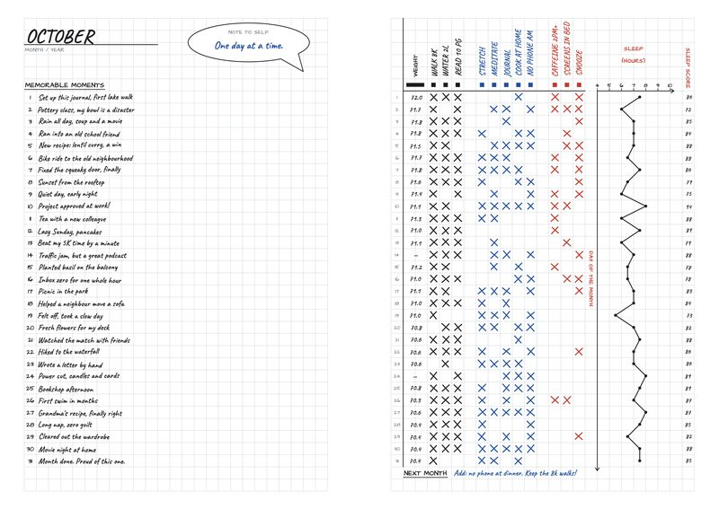
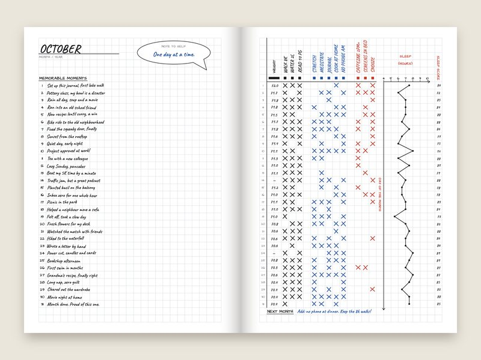
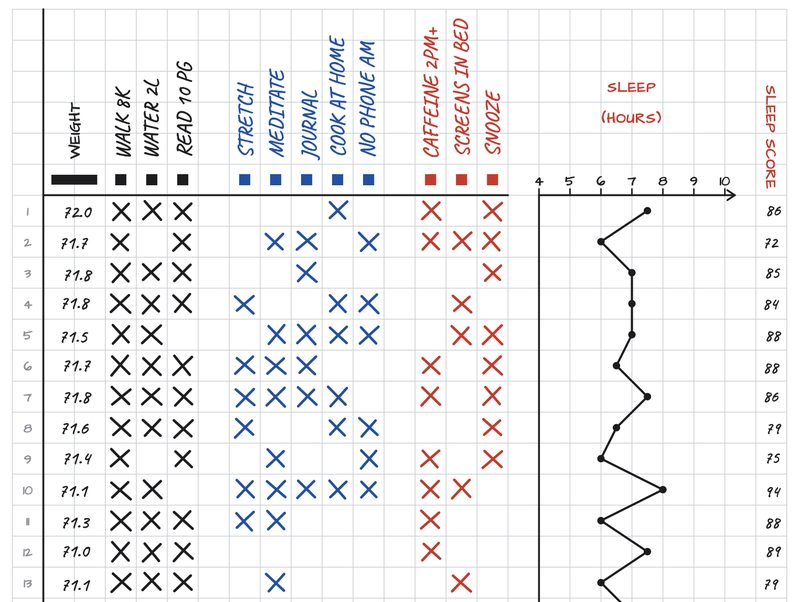
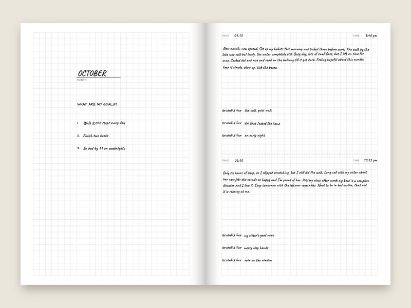
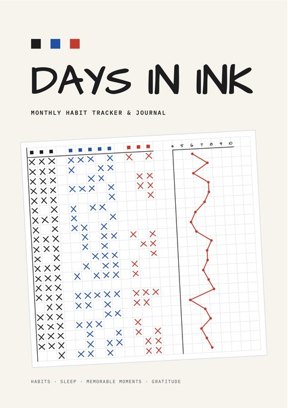
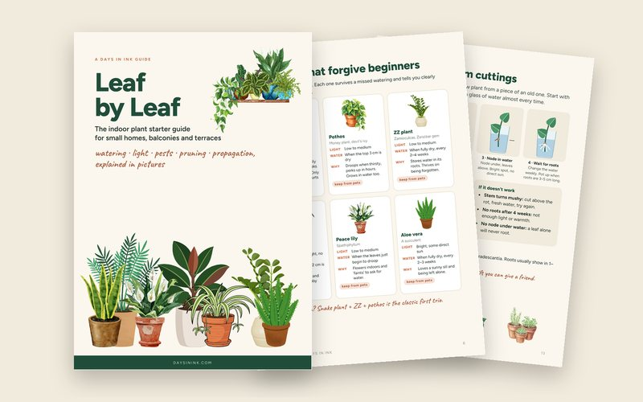

Printable PDF
- Print at home, as many months as you like
- A5 pages, plus A4 and US Letter sheets with each month's spread on one page
- Colour and black-and-white versions
- Also works in GoodNotes and other PDF apps
Monthly habit tracker & journal
One spread a month.
One line a day.
A pen-and-paper habit tracker and journal. Track your habits in three inks, graph your sleep, and keep one memorable moment from every day.
Undated · A5 · 5 mm grid

Set up a two-page spread at the start of each month. It takes about ten minutes, and the pages do the rest.
One line for every day: the one thing you want to remember, good or bad.
Write your habits across the top and mark an X on each day you do them. The ink tells you what kind of habit it is.
Put a dot at the hours you slept and join the dots. Your sleep score goes in the column beside it.
Three goals for the month, then half a page a day that ends with three things you're grateful for.

A small square under each habit name sorts your habits into three groups, so a month of X marks shows you what is working.

At night, write half a page in the journal: how the day went, and three things you're grateful for.
Both are undated, so you can start any month.



New · A Days in Ink guide
An indoor plant starter guide for small homes, balconies and terraces. Most houseplants die from too much water in too little light; this guide shows you how to avoid both, one picture at a time.
24 pages · A5 PDF · for beginners
No. You write the month at the top, so you can start any time and skip a month without wasting pages.
A pen, ideally three colours: black, blue and red.
Yes. Open the printable PDF in GoodNotes, Notability or any app that lets you write on PDFs.
No. Plot the hours you think you slept, and give the night your own score out of 10.
Every month. The habit names are blank, so you write in the ones you're working on.
Write to hello@daysinink.com.